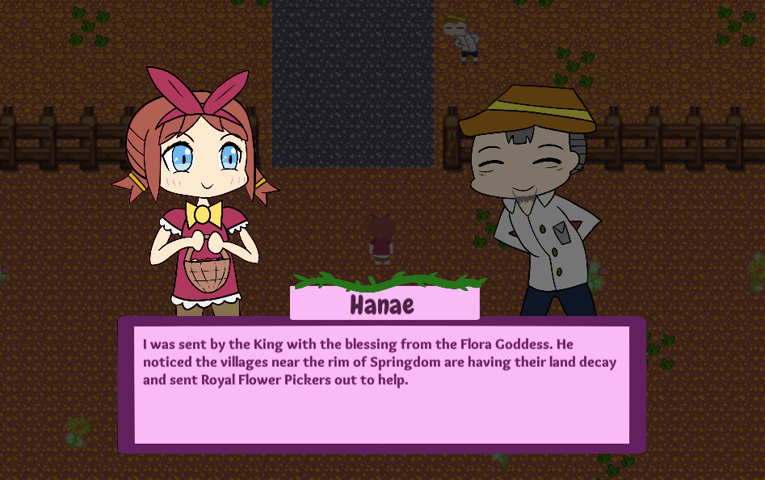
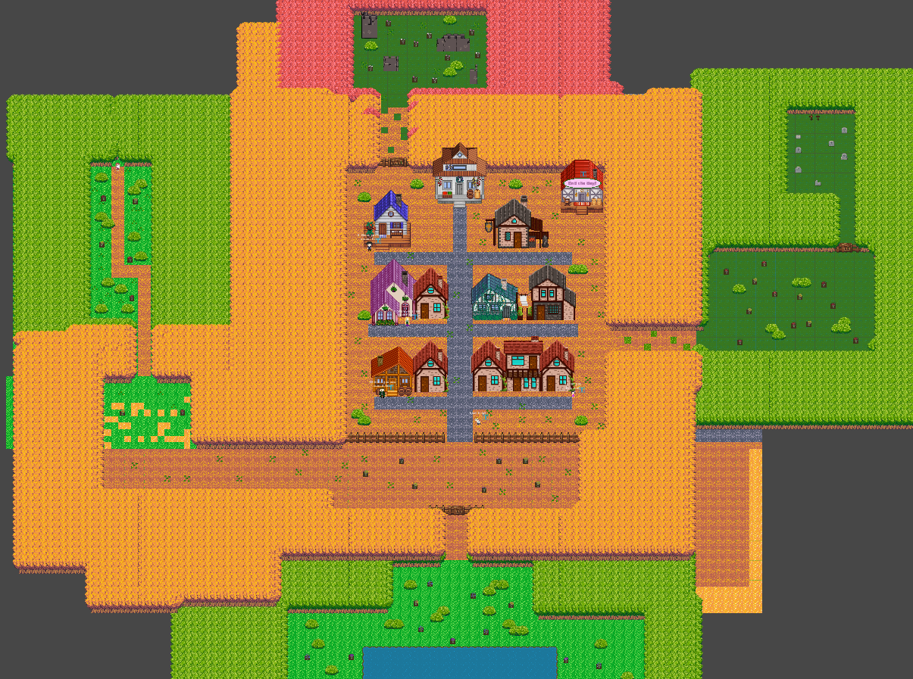
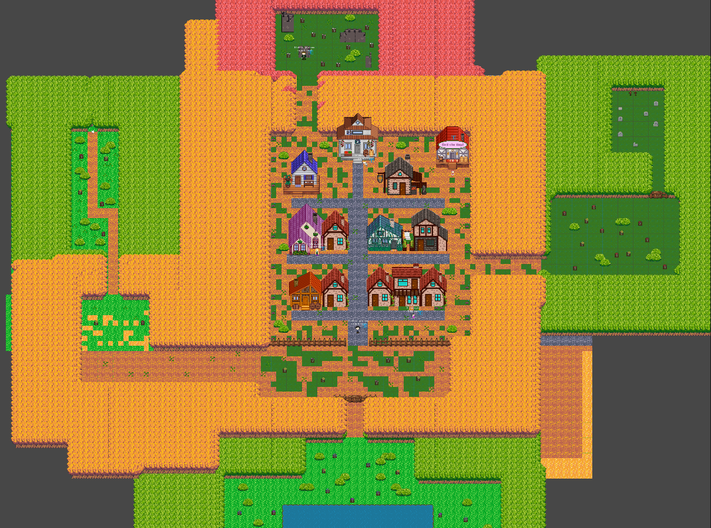
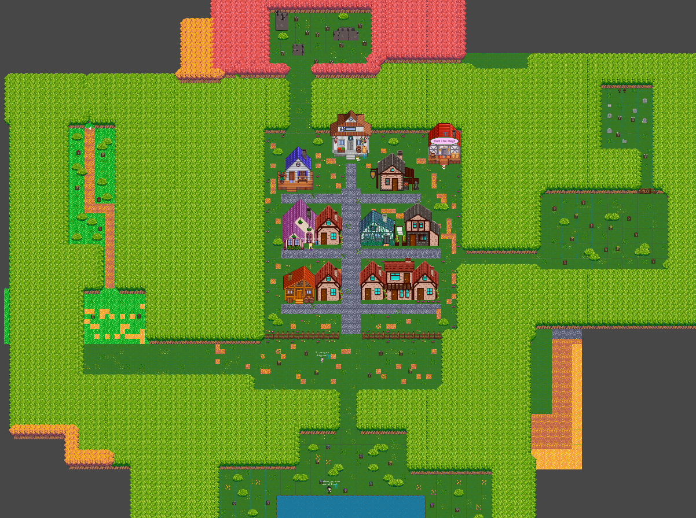

A top down 2d pixel art game where you play as Hanae, a royal flower picker,
sent to a village in need of flowers. Help the villagers with their requests,
rejuvenate the land, and save the village from its fate. The gameplay is simple,
roam around, plant seeds, and pick up flowers. Each villager has their own story that unfolds throughout the days.
Goal
My main priority in this game is narrative design,
story writing, and character design. This is my first game to have a lite quest system,
each villager having a unique personality and a new quest each day. Through playing the levels, it showcases
character arcs for each character and progression of the story.
Development
This game was developed in Unity for the Spring Jam 2021. The theme was flexible so as long as the game had a spring feeling to it. I wanted to
do a simple game where the player goes around collecting items (in this case flowers) and complete quests for NPCs. My main focus of
the game was to design the narrative and characters for the game, so I used assets from Itch.io and GameDev Market for environment
design. A since the game was going to be a top-down controller scheme, I borrowed code from my previous projects to expedite the coding
process. The flower picking system is a basic collsion interaction, giving the player to pick up a flower when the player collides with the
trigger box for each plant. To track the player's flower count, the inventory system stores the flower amount in a static INT variable.
The next step was the dialogue system. I used Inkle's Ink plugin for the first time, creating a simple system to write lines of dialogue
and tage each line with the character's name and sprite. I then used a Character Manager that works along the Dialogue Manager to display
the appropiate character and dialogue. Since I was going for a simple visual novel format, I designed the UI to have two characters present
at a given moment, Hanae would always be located on the left and another character be displayed on the right. And like typical visual novel format
the active character would be displayed normally while the inactive character will be shadowed with a black mask and lowered opacity.

Narrative Design
The premise of the game revolves around picking flowers as a necesarry role to help revitalize the kingdom of Springdom. This way, it
helps contextualize the palyer's role in the game and a reason as to why the player is doing their activities. I set the game in a desolate
tower to showcase the importance of flower picking, and the emphasis on maintaining the environment.
Flowers are also important for the quests of each character. Each character has a unique design and story arc independant from other storylines.
This gives another reason as to why the player is picking flowers for each character, showcasing each character's personality and their overall
character arc.
The game is split into 5 levels, each representing a new day in the village. This gives a sense of progression in the story. Along with the days,
to reflect the main character's actions of positiely affecting the environment, the level will gradually change, becoming more lively throughout
the game. New areas are unlocked each day, expanding the map and making the player feel a sense of progression.



Each day is finished when the player completes all the quests for the level and checks in at her cabin. If the player isn't finished
with their quests, they will be told that they haven't finished and will need to continue the level. To give the player guidance, the
old man NPC acts as a guide the player can seek out, telling the player the location of each character in the map. The quest progress
is managed by a Quest Manager in the game during each level, tracking what has been completed and unlocking the ability to progress to
the next day. The Quest Manager isn't static, changing the character quests each level and having to keep track for each day.
To set the setting and premise of the game, I made an intro comic sequence. It is a simple script that holds images and sentences that
the player progresses by pressing the Space bar. The same system is also used for the ending sequence.
When it came to designing the characters, I wanted to keep variety in mind. Through this, Hanae would be fleshed out with her
interactions with the characters. Each character Hanae interacts with has their own character arc that develops them as characters over the course
of the game.
Hanae is the main character. She is a royal flower picker who takes her job seriously. She is kind and caring, worrying about
others too much. She is knowledgable about different types of flowers and their uses, allowing her to help the other characters.
Anko is a starry eyed girl who admires Hanae, allowing Hanae to act as a mentor figure to her. Anko learns about flowers, and by
extension the player as well.
Isaac is more timid and shy, letting Hanae show more compassion and empathy, as well as flower knowledge to aid in his endeavors. He
has a crush on Kat, in which Hanae lends a helping hand.
Kat is sociable and amiable, being one of the older characters in the game. Her family runs a diner, highlighting the other uses cases
of flowers in the world.
John is a stubborn man who comes off as mean at first. This creates friction between Hanae and him but overtime
he slowly reveals more about his history and eventually becomes on good terms with Hanae.
Jeffery is the first character Hanae interacts with and he acts as an information directory, aiding the player through
the game about locations of characters and the overall map layout. He also gives general backstory on the village and the residents.